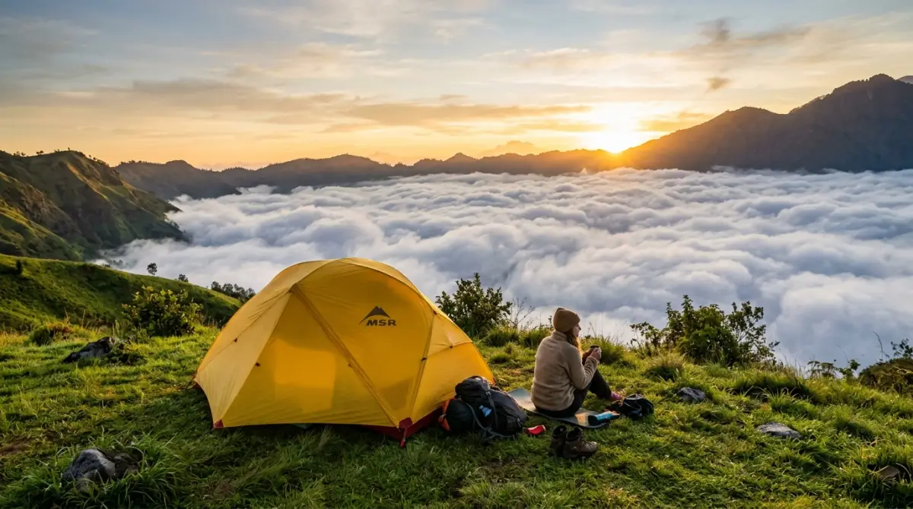
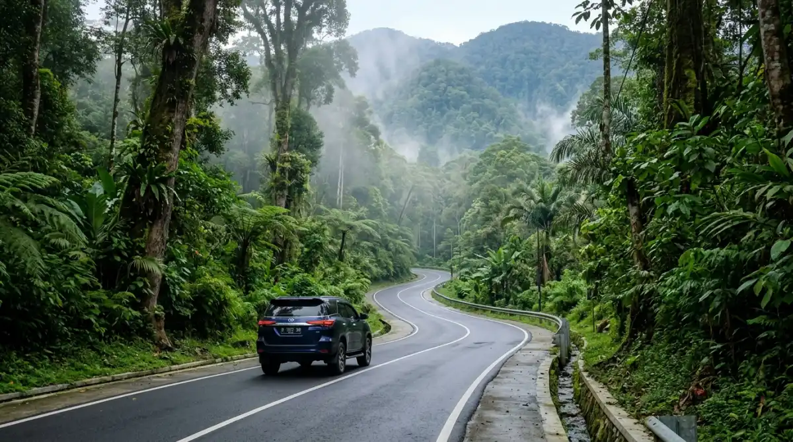

Keindahan panorama alam camping ground di kawasan Gunung Bunder — destinasi healing sempurna bagi pekerja kantoran yang butuh jeda dari rutinitas.Pernah nggak sih, kamu merasa terjebak dalam rutinitas kerja yang itu-itu saja? Pagi sudah harus bertarung dengan macet, siang hari kepalamu penuh dengan tekanan deadline laporan bulanan, dan sorenya masih harus menyambung nafas untuk meeting dadakan. Waktu berjalan begitu cepat, dan tanpa sadar, sudah berbulan-bulan kamu tidak menghirup udara segar yang benar-benar bersih dari kepungan polusi kota.
Jika kamu terus mengabaikan sinyal kelelahan dari tubuh dan menunda waktu istirahat, rasa jenuh ini lambat laun akan merampas produktivitas dan kebahagiaanmu. Bayangkan, sementara kamu masih sibuk membalas pesan grup kantor di akhir pekan, teman-temanmu di luar sana sedang menyeruput kopi hangat sambil memandangi lautan awan yang menenangkan.
Jangan sampai kamu menyesal di kemudian hari karena melewatkan kesempatan healing yang berkualitas selagi fisik dan waktumu masih memungkinkan. Untuk kamu yang butuh pelarian sejenak tanpa repot ambil cuti panjang, panorama alam camping ground adalah jawaban yang paling tepat. Mari kita ulas tuntas kelebihannya!
Daya Tarik Utama Panorama Alam Camping Ground
Sebagai seseorang yang sering menjadikan alam bebas sebagai pelarian dari hiruk-pikuk pekerjaan, aku bisa bilang bahwa menemukan tempat berkemah yang pas itu ibarat menemukan rekan kerja yang satu frekuensi: susah-susah gampang, tapi begitu ketemu, rasanya luar biasa nyaman.
Berlokasi di kawasan yang strategis di sekitar area Halimun Salak (Pamijahan, Gunung Bunder), destinasi ini menawarkan visualisasi alam yang memanjakan mata, membuktikan bahwa kawasan ini bukan sekadar area mendirikan tenda, melainkan sebuah ruang untuk menjernihkan pikiran.
Lautan Awan dan Sunrise Penawar Stres
Daya tarik magis yang paling diburu oleh para pengunjung di sini adalah pemandangan sunrise atau matahari terbitnya yang luar biasa indah. Jika kamu rela bangun sedikit lebih pagi, menahan hawa dingin yang menusuk tulang, kamu akan disuguhi panorama lautan awan tebal yang menyelimuti lembah di bawah sana. Perlahan, semburat oranye kemerahan dari matahari yang naik ke cakrawala akan menghangatkan suasana.
Melihat pemandangan ini rasanya jauh lebih melegakan daripada melihat notifikasi "Gaji Telah Masuk" di akhir bulan. Ada ketenangan luar biasa yang membuat kita sadar bahwa dunia ini terlalu luas dan indah untuk sekadar dihabiskan di balik kubikel meja kerja. Momen pergerakan awan yang bergelombang ini sangat epik untuk diabadikan oleh lensa kamera, atau sekadar dinikmati sambil duduk merenung.
Pemandangan City Lights yang Estetik di Malam Hari
Saat malam tiba dan matahari benar-benar tenggelam, pesona panorama alam camping ground tidak ikut redup. Justru, pemandangan berganti menjadi kanvas hitam yang dihiasi oleh jutaan kelap-kelip lampu kota (city lights) dari kejauhan. Udara malam yang turun perlahan berpadu sempurna dengan pemandangan lampu-lampu tersebut.
Melihat gemerlap kota dari kejauhan mengingatkan kita pada tumpukan pekerjaan; terlihat rumit saat kita berada di dalamnya, namun tampak damai ketika kita mengambil jarak sebentar untuk melihat gambaran besarnya. Di momen ini, kamu bisa menyalakan api unggun kecil, memanggang sosis atau jagung, dan berbagi cerita hangat bersama keluarga atau teman-teman, terlepas dari segala obrolan tentang target perusahaan.
Mengupas Fasilitas Panorama Alam Camping Ground
Satu hal yang sering menjadi kekhawatiran banyak orang sebelum memutuskan untuk berkemah adalah perkara fasilitas penunjang. Maklum, kita yang terbiasa hidup praktis di kota kadang malas kalau harus dihadapkan pada situasi yang serba minim. Berdasarkan observasi langsung dan pengalaman banyak penggiat alam, pengelola tempat ini paham betul cara menyajikan harmoni antara suasana liar pegunungan dengan standar kenyamanan manusia modern.
Area Parkir Luas dan Akses Campervan
Jika kamu membawa keluarga besar atau membawa banyak perabotan, kamu tidak perlu khawatir. Tempat ini dirancang agar sangat bersahabat bagi pengguna kendaraan pribadi. Area parkirnya cukup luas dan tertata. Menariknya lagi, bagi kamu yang ingin merasakan sensasi campervan—berkemah tepat di sebelah mobil pribadi—terdapat area khusus yang datar dan strategis.
Ini sangat membantu bagi rombongan keluarga yang membawa anak kecil, karena kamu tidak perlu berjalan jauh mengangkut barang dari mobil ke area tenda. Mengatur barang bawaan di sini semudah menyusun folder di komputer kerjamu.
Kebersihan Toilet dan Akses Listrik 24 Jam
Ketersediaan air bersih dan toilet yang layak adalah kunci dari kenyamanan berkemah. Di panorama alam camping ground, fasilitas toilet umum dan kamar mandi dijaga kebersihannya dengan sangat baik. Air pegunungan yang mengalir terasa sangat segar—dan jujur saja, sangat dingin—siap membangkitkan kesadaranmu di pagi hari lebih cepat daripada espresso terkuat sekalipun.
Selain itu, pengelola juga menyadari betapa pentingnya energi di era digital ini. Terdapat akses colokan listrik yang didistribusikan secara merata di sekitar area camp. Jadi, buat kamu yang masih harus mencuri waktu untuk mengecek email penting atau sekadar memastikan baterai ponsel penuh untuk berfoto ria, ketersediaan listrik ini benar-benar menjadi penyelamat.
Penyewaan Alat Camping: Solusi Anti Ribet
Bagi pemula yang baru pertama kali ingin mencoba berkemah dan belum memiliki peralatan sendiri, tak perlu mundur teratur. Di lokasi ini tersedia jasa penyewaan berbagai alat camping yang cukup komprehensif. Mulai dari tenda dome dengan berbagai ukuran, matras, sleeping bag, lampu tenda, hingga perlengkapan memasak portabel (nesting dan kompor hi-cook).
Konsepnya persis seperti sistem plug and play di dunia teknologi; kamu hanya perlu datang membawa pakaian ganti, bahan makanan, dan perlengkapan pribadi, sementara urusan rumah sementaramu sudah disiapkan oleh pihak pengelola.
"Menikmati keindahan luar biasa di tempat ini nyatanya tidak akan membuat dompetmu menangis, bahkan jika kamu datang di tanggal tua saat saldo rekening sudah mulai menipis."
— Refleksi Pelancong ModernRincian Harga Tiket Masuk (HTM)
Sekarang mari kita bicara soal anggaran. Salah satu alasan mengapa wisata alam begitu diminati adalah karena rasio nilai terhadap biaya yang ditawarkannya sangat sepadan. Menikmati keindahan luar biasa di tempat ini nyatanya tidak akan membuat dompetmu menangis, bahkan jika kamu datang di tanggal tua saat saldo rekening sudah mulai menipis.
Secara umum, harga tiket masuk (HTM) untuk berkemah di kawasan wisata alam Gunung Bunder atau Pamijahan ini berkisar di angka yang sangat merakyat, yakni antara Rp 40.000 hingga Rp 75.000 per orang untuk durasi menginap semalam. Harga ini biasanya sudah merangkum biaya kebersihan, penggunaan toilet, dan akses listrik dasar. Jika kamu membawa kendaraan, tentu ada biaya retribusi parkir terpisah—sekitar Rp 10.000 untuk motor dan Rp 20.000 hingga Rp 30.000 untuk mobil, tergantung jenis area yang kamu tempati.
Apabila dikalkulasi, total biaya yang kamu keluarkan untuk satu hari berkemah di sini bahkan jauh lebih murah dibandingkan dengan biaya nongkrong di coffee shop kawasan Sudirman selama tiga jam. Sebuah investasi yang sangat murah untuk menukar stres yang menumpuk dengan kesehatan mental yang prima.
Panduan Rute Lokasi Menuju Area Perkemahan
Lokasi destinasi healing ini secara administratif berada di kawasan wisata Gunung Bunder, Kecamatan Pamijahan, Kabupaten Bogor, yang masuk dalam wilayah Taman Nasional Gunung Halimun Salak. Mengingat tempatnya berada di wilayah dataran tinggi, penting bagimu untuk mengetahui panduan rute perjalanan agar tiba dengan selamat tanpa membuang waktu tersesat.

Perjalanan menuju panorama alam camping ground melewati jalan beraspal yang layak — pastikan kondisi kendaraanmu prima sebelum berangkat.Rute Berkendara dari Pusat Kota
Bagi kamu yang datang dari arah Jakarta atau Depok, rute tercepat adalah melalui Jalan Tol Jagorawi dan keluar di gerbang Tol Sentul Selatan atau gerbang Tol Bogor (Baranangsiang). Dari sana, arahkan kendaraanmu menuju Jalan Raya Dramaga (melewati kampus IPB). Teruslah melaju menuju Ciampea, lalu ikuti petunjuk jalan raya menuju pertigaan Cikampak. Dari pertigaan ini, ambil arah menuju kawasan Pamijahan atau Gunung Bunder.
Jalannya sudah beraspal dan cukup layak dilewati oleh kendaraan standar perkotaan. Papan petunjuk arah menuju kawasan wisata Gunung Bunder juga cukup jelas di sepanjang jalan, sehingga kamu bisa memadukan navigasi dari aplikasi peta digital di ponsel cerdasmu dengan petunjuk fisik di jalanan.
Tips Keselamatan Kendaraan Sebelum Berangkat
Mengingat kontur jalan di kawasan Gunung Salak dan sekitarnya didominasi oleh tanjakan panjang dan turunan yang cukup curam, pastikan kondisi kendaraanmu dalam keadaan prima. Ibarat mempersiapkan presentasi di depan jajaran direksi, persiapannya harus matang dan tanpa celah.
Cek fungsi rem secara menyeluruh, pastikan kampas rem masih tebal, dan periksa tekanan angin ban. Kendaraan dengan transmisi manual biasanya lebih direkomendasikan untuk menaklukkan medan pegunungan, namun jika kamu menggunakan mobil matic, pastikan kamu paham cara menggunakan gigi rendah saat menemui tanjakan curam. Berkendaralah dengan santai; nikmati perubahan suhu yang mulai mendingin dan udara yang semakin bersih seiring kamu memasuki kawasan hutan pinus di area Taman Nasional.
Penutup
Pada akhirnya, bekerja keras memang keharusan untuk menjemput impian dan memenuhi kebutuhan hidup. Namun, apalah artinya sebuah pencapaian jika kita terlalu lelah untuk sekadar tersenyum dan menikmatinya? Bayangkan jika sepuluh tahun dari sekarang, kamu menoleh ke belakang dan hanya melihat ingatan tentang lembur di depan layar komputer tanpa ada satupun kenangan indah bersama keluarga di alam bebas.
Menghabiskan akhir pekan di panorama alam camping ground bukan sekadar kegiatan menghabiskan uang, melainkan upaya berinvestasi pada memori, kedekatan sosial, dan kewarasan diri sendiri. Jadi, tutup perlahan laptopmu, kemasi barang-barangmu, dan mulailah perjalananmu menuju alam akhir pekan ini.
FAQ — Panorama Alam Camping Ground